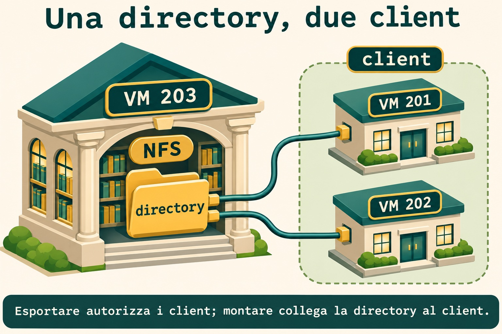
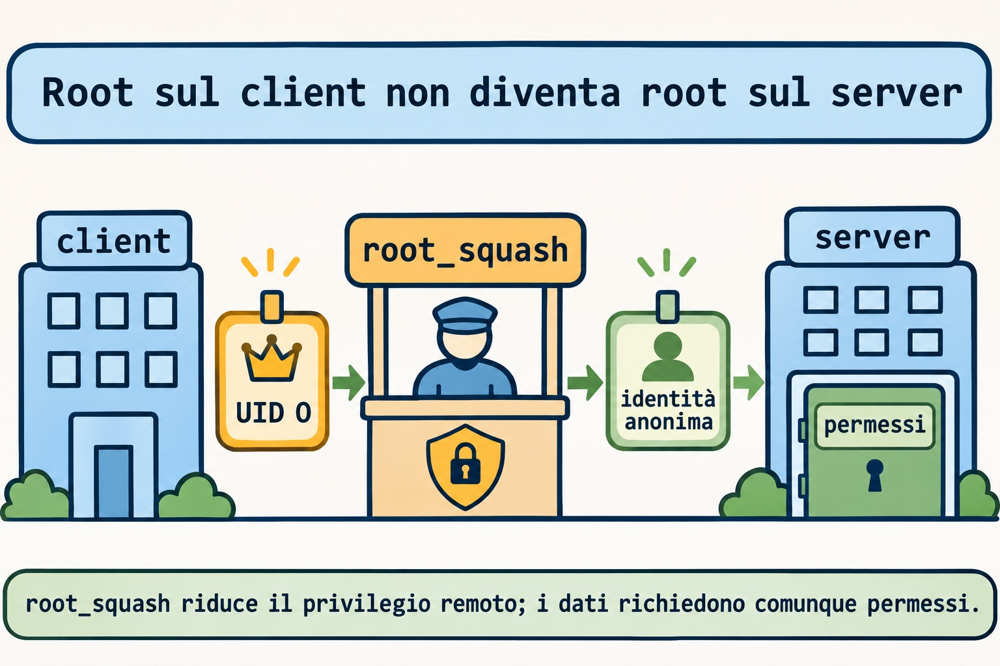

Lezione 13.1 · Server NFS
Su Windows Server condividere una cartella coinvolge servizio, client autorizzato e permessi dei file. Con NFS separi le stesse domande. Questa lezione aggiunge la VM 203 al laboratorio, pubblica una directory soltanto per le due VM del corso e mantiene SELinux e firewall attivi.
Il cuore di questa lezione: l'esportazione definisce quali client e operazioni il server consente; il firewall limita l'accesso di rete; i permessi dei file restano validi. Il resto è approfondimento.
| Scheda | |
|---|---|
| Modulo | M13 · Archiviazione in rete, lezione 1 di 3 |
| Quando | Settimana 18 |
| Alla fine | Prepari la VM 203 ed esporti contenuti NFS in lettura alle VM 201 e 202 |
| Prerequisiti | M0–M12; noVNC, backup del corso, IP riservato fuori dal pool DHCP e storage del laboratorio |
| Durata | Circa 90 minuti, più l'installazione della nuova VM |
| Snapshot | m13a1-inicio e m13a1-fim sulle VM 201, 202 e 203 |
1 · Riscaldamento
Rispondi senza consultare il materiale. Le soluzioni sono in fondo.
- Consentire una porta nel firewall crea il servizio che vi risponde?
- Proprietario, permessi e contesto SELinux rispondono alla stessa domanda?
- Perché controlli un VMID nel cluster prima di creare una VM?
2 · Perché conta
Vuoi fornire gli stessi contenuti a due server. Copiare i file su ogni host crea versioni diverse e richiede sincronizzazione. Una condivisione permette di lavorare con un'origine centrale, ma aggiunge una dipendenza dalla rete e dal file server.
L'obiettivo non è rendere qualsiasi directory accessibile a qualsiasi macchina. Pubblicherai un albero dedicato, in lettura, per due indirizzi noti e verificherai separatamente ogni livello.
3 · Modello mentale
Il server è la biblioteca dell'edificio. L'esportazione è l'elenco dei lettori autorizzati. Montare significa inserire un accesso a quella biblioteca nell'albero del client; non significa copiare i libri su un altro disco.
VM 203: directory -> esportazione -> NFS -> VM 201 e VM 202
| | | |
file client 2049/tcp mount

Ponte Windows
| Riferimento Windows | In questo lab Linux |
|---|---|
| Cartella condivisa | Directory esportata tramite NFS |
| Client autorizzato | IP esatto nell'esportazione e nel firewall |
| Percorso di accesso remoto | Server e percorso dell'esportazione |
| Permessi del file | UID, GID, permessi e politica attiva |
4 · L'essenziale
Esportare non significa montare
Il server mantiene l'elenco in /etc/exports e nei file che terminano con .exports dentro /etc/exports.d/. exportfs applica e mostra le esportazioni. Un file salvato deve essere caricato per partecipare allo stato attivo.
In questa lezione usa NFS 4.2. I client successivi sceglieranno esplicitamente questa versione. Il traffico principale raggiunge TCP 2049; questo non rende le vecchie ricerche di showmount una prova adeguata per ogni server NFSv4.
Opzioni con uno scopo
| Opzione | Funzione nel lab |
|---|---|
ro | Esportare in lettura |
sync | Confermare le scritture secondo le garanzie del server |
root_squash | Ridurre l'identità remota con UID zero |
no_subtree_check | Evitare la verifica aggiuntiva del sottoalbero esportato |
Non mettere spazi tra il client e le parentesi delle sue opzioni. In questo modulo il server si fida degli identificatori numerici inviati dai client con AUTH_SYS; usa soltanto la rete autorizzata del lab, senza pubblicare NFS su Internet.

Root remoto ha un limite
root_squash non trasforma tutti gli utenti in anonimi. Gestisce l'identità privilegiata remota. Non sostituisce il controllo di UID e GID degli utenti normali, che farai nelle prossime lezioni.


Rocky × Debian
| Voce | Rocky 9 | Debian 13 |
|---|---|---|
| Server di questa lezione | VM 203, nfs-utils | Ruolo client sulla VM 202 |
| Unità server | nfs-server.service | Se fosse server: nfs-kernel-server.service |
| Pacchetto client | nfs-utils | nfs-common |
| Politica aggiuntiva | SELinux enforcing | AppArmor secondo i profili attivi |
Il piano introduce un solo server NFS, Rocky sulla VM 203. Le VM 201 e 202 ripetono il ruolo client; non creare un secondo server e non usare una VM fuori dalla tabella del corso.
5 · Lab guidato
Passo 1 · Creare la VM 203 con identità propria
Ipotesi: un ID libero sul nodo attuale basta a garantire che sia libero nel cluster?
Sull'host Proxmox controlla ID, storage e ISO reale prima della creazione. Se 203 è già in uso, interrompi la creazione e rivedi l'inventario; non rimuovere la VM trovata.
qm list
pvesh get /cluster/resources --type vm
pvesm statusRiapplica la procedura di creazione e installazione della lezione 0.1 usando questi valori. Seleziona l'ISO Rocky 9 presente nello storage; non inventare l'identificatore del volume.
| Campo | Valore della nuova VM |
|---|---|
| VMID e nome | 203, srv-lab |
| CPU, memoria e disco | x86-64-v2-AES, 2 vCPU, 2 GB, 20 GB |
| Macchina e firmware | q35 e UEFI OVMF |
| Storage e interfaccia | vm-hdd, virtio su vmbr0 |
| Sistema e accesso | Rocky 9, student, sudo, SSH con chiave e guest agent |
| Rete | IPv4 riservato fuori dal pool DHCP, prefisso, gateway e DNS confermati nel piano di rete |
Esegui una nuova installazione tramite noVNC. Non clonare l'identità di una VM esistente. Registra l'indirizzo riservato come IP_SRV, senza presumere che il numero successivo sia disponibile; l'assenza di risposta al ping non dimostra una riserva. Prepara l'alias SSH srv-lab su Windows come nella 0.2.
Output atteso: VM 203 con hostname e chiavi host propri, indirizzo riservato persistente e accesso con chiave.
Verifica: sulla 203 controlla hostnamectl --static, ip -br address, sudo systemctl is-active qemu-guest-agent e una nuova sessione ssh srv-lab da Windows. Riavvia la VM e conferma lo stesso indirizzo prima di esportare i file.
Passo 2 · Registrare la base e installare NFS
Ipotesi: uno snapshot precedente alla creazione del servizio permette di tornare indietro senza cancellare le VM client?
Sull'host Proxmox, dopo aver installato e controllato la nuova VM:
qm snapshot 201 m13a1-inicio
qm snapshot 202 m13a1-inicio
qm snapshot 203 m13a1-inicioSulla 203 crea i registri e annota l'IP reale. La cartella deve essere assente.
test ! -e "$HOME/m13"
mkdir -m 700 "$HOME/m13"
read -r -p 'IP_SRV: ' IP_SRV
printf '%s\n' "$IP_SRV" > "$HOME/m13/ip-servidor"
ip -br address
sudo dnf install -y nfs-utils policycoreutils-python-utils
getenforce
sudo firewall-cmd --state
sudo exportfs -vOutput atteso: indirizzo digitato presente sull'interfaccia, SELinux enforcing, firewalld attivo e nessuna esportazione di un altro esercizio. Se la base è diversa, correggi la preparazione prima di procedere.
Verifica: NFS verrà installato soltanto sul server 203 in questa lezione. I pacchetti client entrano nella 13.2. Conserva lo stato iniziale di SSH e firewalld.
Passo 3 · Preparare la directory di lettura
Ipotesi: un'esportazione in lettura richiede che il file sia scrivibile da tutti?
Sulla 203 controlla i nomi riservati prima di creare qualsiasi file.
sudo test ! -e /srv/m13-share
sudo test ! -e /etc/exports.d/m13-share.exports
sudo install -d -m 0755 /srv/m13-share
printf 'NFS COURSE ok\n' | sudo tee /srv/m13-share/leia.txt > /dev/null
sudo chmod 0644 /srv/m13-share/leia.txt
sudo semanage fcontext -l -C | grep -F '/srv/m13-share'Se esiste già una regola locale per questo albero, fermati e rivedine l'origine prima di sostituirla. Registra un tipo di contenuto pubblico per la condivisione in lettura.
sudo semanage fcontext -a -t public_content_t '/srv/m13-share(/.*)?'
sudo restorecon -Rv /srv/m13-share
ls -ldZ /srv/m13-share
ls -lZ /srv/m13-share/leia.txt
getsebool nfs_export_all_ro nfs_export_all_rwOutput atteso: albero attraversabile, file leggibile e regola di contesto applicata. Leggi i booleani esistenti senza impostare l'host permissive e senza ampliare la politica per tentativi.
Verifica: matchpathcon -V /srv/m13-share/leia.txt deve corrispondere alla regola registrata. Se una politica locale più restrittiva nega poi l'accesso, indaga il registro e la politica specifica, come nel M12.
Decidi 1
Vuoi consentire soltanto i due client del corso. Quale destinazione descrive questa intenzione?
| Opzione | Azione |
|---|---|
| A | Esportare verso qualsiasi host |
| B | Usare gli IP esatti delle VM 201 e 202 |
| C | Rendere la directory scrivibile da tutti |
Scegli B. L'elenco dei client e i permessi dei file sono controlli diversi.
Passo 4 · Registrare e caricare l'esportazione
Ipotesi: salvare il file di esportazione aggiorna già la tabella usata dal server?
Sulla 203:
sudo install -d -m 0755 /etc/exports.d
sudo tee /etc/exports.d/m13-share.exports > /dev/null <<'EOF'
/srv/m13-share 10.1.0.51(ro,sync,root_squash,no_subtree_check) 10.1.0.52(ro,sync,root_squash,no_subtree_check)
EOF
sudo chmod 0644 /etc/exports.d/m13-share.exports
sudo systemctl enable --now nfs-server.service
sudo exportfs -rav
sudo exportfs -v
sudo ss -lnt 'sport = :2049'Output atteso: esportazione verso i due IP con lettura, root_squash e servizio su TCP 2049. La rappresentazione delle opzioni in exportfs -v può includere altri valori predefiniti.
Verifica: controlla separatamente il percorso e ogni client. Uno spazio prima delle parentesi cambierebbe il significato; non correggere un errore sintattico aprendo l'accesso a tutti.
Passo 5 · Autorizzare la rete necessaria
Ipotesi: consentire TCP 2049 per due IP modifica la regola SSH?
Sulla 203 identifica la zona effettiva dell'interfaccia e delle sorgenti del lab. La base deve bloccare TCP 2049 senza un'autorizzazione e non deve avere il servizio NFS o una porta equivalente aperti in modo ampio. Le regole esatte seguenti non devono esistere prima di questa lezione.
sudo firewall-cmd --get-active-zones
read -r -p 'ZONE: ' ZONE
sudo firewall-cmd --zone="$ZONE" --list-all
RULE201='rule family="ipv4" source address="10.1.0.51/32" port port="2049" protocol="tcp" accept'
RULE202='rule family="ipv4" source address="10.1.0.52/32" port port="2049" protocol="tcp" accept'
printf '%s\n' "$ZONE" > "$HOME/m13/zone"
printf '%s\n' "$RULE201" > "$HOME/m13/rule201"
printf '%s\n' "$RULE202" > "$HOME/m13/rule202"
sudo firewall-cmd --zone="$ZONE" --add-rich-rule="$RULE201"
sudo firewall-cmd --zone="$ZONE" --add-rich-rule="$RULE202"
sudo firewall-cmd --permanent --zone="$ZONE" --add-rich-rule="$RULE201"
sudo firewall-cmd --permanent --zone="$ZONE" --add-rich-rule="$RULE202"
sudo firewall-cmd --check-configOutput atteso: le due regole esistono nello stato attivo e permanente. Non è stata modificata l'autorizzazione SSH né aperto NFS a un'intera rete.
Verifica: dalle VM 201 e 202 inserisci IP_SRV confermato e prova timeout 2 bash -c "</dev/tcp/$IP_SRV/2049" && echo ok. Questo verifica TCP; la lettura NFS sarà verificata nella 13.2.
Decidi 2
La porta risponde, ma un client segnala accesso negato al mount. Qual è l'evidenza successiva?
| Opzione | Azione |
|---|---|
| A | Controllare esportazione attiva, sorgente reale e percorso richiesto |
| B | Rimuovere root_squash |
| C | Disattivare SELinux |
Scegli A. TCP e autorizzazione dell'esportazione rispondono a domande diverse.
Passo 6 · Verificare il server dopo il reboot
Ipotesi: un servizio abilitato senza esportazione valida fornisce automaticamente la directory corretta?
Sulla 203 riavvia e torna tramite SSH o noVNC.
sudo systemctl rebootDopo il riavvio:
systemctl is-active nfs-server.service
sudo exportfs -v
getenforce
matchpathcon -V /srv/m13-share/leia.txt
ZONE=$(cat "$HOME/m13/zone")
RULE201=$(cat "$HOME/m13/rule201")
RULE202=$(cat "$HOME/m13/rule202")
sudo firewall-cmd --zone="$ZONE" --query-rich-rule="$RULE201"
sudo firewall-cmd --permanent --zone="$ZONE" --query-rich-rule="$RULE202"Output atteso: servizio attivo, esportazione corretta, enforcing e regole persistenti.
Verifica: verifica nuovamente TCP da ogni client e una sessione SSH da Windows. Il mount e l'identità numerica entrano nella prossima lezione.
6 · Rompi e ripara
Guasto 1 · File salvato con nome ignorato
Sulla 203 cambia soltanto il suffisso del file dedicato.
sudo mv /etc/exports.d/m13-share.exports /etc/exports.d/m13-share.disabled
sudo exportfs -raSintomo: il servizio resta attivo, ma l'esportazione di esercizio scompare dalla tabella.
Indagine: confronta i file e la tabella caricata.
sudo ls -l /etc/exports.d/
sudo exportfs -vCausa: il file non termina più con .exports e non partecipa al caricamento normale.
Riparazione: ripristina il nome esatto e ricarica l'esportazione.
sudo mv /etc/exports.d/m13-share.disabled /etc/exports.d/m13-share.exports
sudo exportfs -raVerifica: exportfs -v torna a elencare i due client.
Prevenzione: controlla file, caricamento e risultato attivo come tre evidenze distinte.
Guasto 2 · Client autorizzato errato
Sulla 203 conserva il file valido e cambia soltanto il client di esercizio.
sudo cp -a /etc/exports.d/m13-share.exports /etc/exports.d/m13-share.backup
sudo sed -i 's/10\.1\.0\.52/10.1.0.99/' /etc/exports.d/m13-share.exports
sudo exportfs -ra
sudo exportfs -vSintomo: TCP 2049 resta raggiungibile dalla VM 202, ma questa non è più nell'esportazione attiva.
Indagine: confronta la sorgente reale della 202 con l'elenco dei client dell'esportazione.
Causa: l'elenco autorizza ora un altro indirizzo; la regola del firewall non corregge quell'elenco.
Riparazione: ripristina la copia valida e riapplica.
sudo cp -a /etc/exports.d/m13-share.backup /etc/exports.d/m13-share.exports
sudo exportfs -raVerifica: la 202 torna nella tabella. Non lasciare l'esportazione di test puntata all'indirizzo errato.
Prevenzione: registra client autorizzato e percorso esportato insieme alla regola di rete.
Guasto 3 · Regola salvata, consenso attivo rimosso
Sulla 203 rimuovi soltanto il consenso attivo della VM 201.
sudo firewall-cmd --zone="$ZONE" --remove-rich-rule="$RULE201"Sintomo: nella zona del lab che blocca per impostazione predefinita, la 201 non apre più TCP 2049, mentre la 202 continua a funzionare.
Indagine: confronta attivo e permanente e controlla che la zona non abbia un'autorizzazione più ampia per quella porta.
sudo firewall-cmd --zone="$ZONE" --list-all
sudo firewall-cmd --zone="$ZONE" --query-rich-rule="$RULE201"
sudo firewall-cmd --permanent --zone="$ZONE" --query-rich-rule="$RULE201"Causa: la regola è stata rimossa soltanto dalla memoria. Il file permanente resta corretto. Un'autorizzazione ampia preesistente nasconderebbe questo guasto e deve essere identificata nella preparazione, senza cancellare regole altrui.
Riparazione: ripristina soltanto il consenso attivo.
sudo firewall-cmd --zone="$ZONE" --add-rich-rule="$RULE201"Verifica: ripeti il test TCP dai due client.
Prevenzione: confronta la politica effettiva e quella persistente prima di concludere la modifica.
Pulizia e continuità
Rimuovi soltanto la copia del guasto. Server, contenuto, regola SELinux e le due autorizzazioni restano come base per le lezioni 13.2 e 13.3. Questa conservazione è intenzionale, non è un servizio dimenticato.
sudo rm -f /etc/exports.d/m13-share.backup
sudo exportfs -v
sudo systemctl is-enabled nfs-server.serviceNon rimuovere la VM 203 e non ripristinare i client allo snapshot per “pulire”. Le prossime lezioni registrano la stessa base e rimuovono soltanto i propri test.
7 · Trappole
| Errore comune | Che cosa fare | Perché |
|---|---|---|
| Autorizzare qualsiasi client | Usare gli IP esatti del lab | Limita la superficie pubblicata |
| Spazio prima delle opzioni | Tenere uniti client e parentesi | La sintassi cambia il significato |
Usare no_root_squash per un errore di proprietario | Controllare UID, GID e permessi | Root remoto non deve ottenere privilegi globali |
| Confondere porta aperta ed esportazione valida | Controllare exportfs -v | TCP non valida il percorso NFS |
8 · Quiz
- Esportare una directory la monta sul client?
- Qual è l'ambito di
root_squash? - Perché
IP_SRVnon va scelto soltanto perché un ping non risponde? - Quale comando mostra le esportazioni attive?
- Aprire TCP
2049alla 202 corregge un IP errato in exports? - Quali stati devono sopravvivere al reboot del server?
9 · Promemoria
| Operazione | Comando |
|---|---|
| Esportazioni attive | sudo exportfs -v |
| Riapplicare i file | sudo exportfs -ra |
| Servizio NFS di Rocky | systemctl status nfs-server.service |
| Ascolto principale | sudo ss -lnt 'sport = :2049' |
| Contesto previsto | matchpathcon -V /srv/m13-share/leia.txt |
Flashcard: crea schede per esportazione, mount, client, ro, root_squash e stato attivo. Ripassa a D+1, D+3, D+7 e D+21.
10 · Checklist e chiusura
- [ ] Ho creato soltanto la VM 203 e riservato formalmente il suo indirizzo.
- [ ] Ho mantenuto firewall e SELinux attivi.
- [ ] Ho esportato soltanto l'albero di esercizio ai due client.
- [ ] Ho lasciato il server pronto per la 13.2 e rimosso i guasti introdotti.
Ultimo esercizio: spiega perché regola di rete, esportazione e permessi del file non siano intercambiabili. Usa il risultato di un guasto.
Reboot di verifica: dopo aver corretto i guasti riavvia la 203 e controlla servizio, esportazione, contesto e regole come nel passo 6. Apri anche una nuova sessione SSH verso ogni VM.
Sull'host Proxmox, dopo la verifica:
qm snapshot 201 m13a1-fim
qm snapshot 202 m13a1-fim
qm snapshot 203 m13a1-fim11 · Nella vita reale
Su un server che amministri o che sei autorizzato a ispezionare, esegui soltanto letture. Leggi exportfs -v, stato del servizio e politica di rete applicabile. Non pubblicare una cartella, cambiare un booleano o modificare il firewall in questa missione.
Quale esportazione è più ampia del necessario? Quale client è una macchina nota? Dove sono documentati proprietario, UID, GID e scopo?
12 · Approfondire quando vuoi
- exports(5): client, opzioni e sintassi.
- NFS su RHEL 9: servizio, versioni e rete.
- Sul server consulta
man exportfs,man nfsd_selinuxeman exports, quando disponibili. - firewall-cmd: regole attive e permanenti.
DeepTutor (http://10.1.0.149:3782, KB "Curso Linux Sysadmin"):
!explica Separe firewall, exportação NFS e permissão do arquivo com uma analogia de biblioteca.!feynman Vou explicar o alcance de root_squash sem confundir com identidade de usuários comuns. Critique minha explicação.!quiz Crie seis situações de cliente, caminho e persistência de exportações NFS.
Soluzioni commentate
Riscaldamento
- No. Il processo deve essere in ascolto e rispondere al protocollo.
- No. Sono controlli diversi che si combinano nell'accesso.
- L'ID può appartenere a un altro nodo; l'inventario del cluster evita di modificare una VM che non è tua.
Quiz
- No. Montare è un'azione del client.
- Riduce l'identità privilegiata remota; non trasforma tutti gli utenti in uno solo.
- Un host può non rispondere a ICMP e continuare a usare l'indirizzo. La riserva deriva dal piano di rete e dal controllo DHCP.
sudo exportfs -v.- No. L'autorizzazione dell'esportazione deve comunque descrivere il client reale.
- Servizio, esportazione, permessi, contesti e regole permanenti che sostengono l'accesso.
← Lezione 12.5 · Audit e crittografia · Indice delle lezioni · Piano del corso: dalla 13.2 in poi →